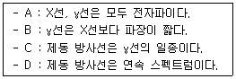
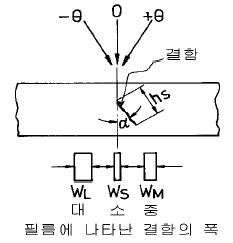
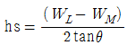
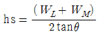
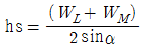
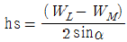
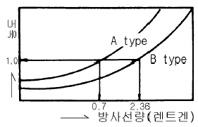
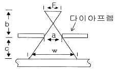
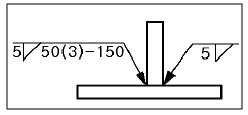

방사선비파괴검사기사(구) (2003-03-16 기출문제)
1과목: 방사선투과시험원리
1. 방사성동위원소인 Ir-192 100Ci가 30일이 경과한 후는 몇 Ci가 되는가?
- 75.8Ci
- 131.9Ci
- 83.8Ci
- 68.9Ci
(정답률: 알수없음)

2. 원자번호가 74번인 텅스텐을 표적물질로 사용한 X선 발생 장치가 있다. X선관에 120kV를 걸었을 때 전자에너지가 X선으로 변환하는 율은 약 몇 %가 되겠는가?
- 1%
- 3%
- 4%
- 10%
(정답률: 알수없음)
3. 다음 중 비전리능이 가장 큰 방사선은?
- α-선
- β-선
- γ-선
- 중성자
(정답률: 알수없음)
4. 셀레늄(Selenium) 등의 반도체 뒤에 금속판을 대고 균일한 전하를 준 후 시험체를 투과한 방사선에 노출되면 방사선의 강도에 따라 반도체의 저항이 작아지고 전하가 이동하여 방전하게 되는데 여기에 반대 전하를 도포하면 육안으로 확인할 수 있는 영상이 형성되며 이에 적절한 수지를 도포함으로써 영상을 형성시키는 원리를 이용하는 방법을 무엇이라고 하는가?
- 건식 방사선투과검사법(Xeroradiography)
- 전자 방사선투과검사법(Electron radiography)
- 자동 방사선투과검사법(Autoradiography)
- 순간 방사선투과검사법(Flash radiography)
(정답률: 알수없음)
5. 다음 중 방사선 투과사진의 보관 수명에 영향을 미치는 가장 중요한 인자 중의 하나는?
- 티오황산염
- 에스테르
- 적혈염
- 브롬화은
(정답률: 알수없음)
6. 연박 증감지를 사용하여 250kVp로 방사선투과검사시 실제적인 촬영두께의 한계로 적당한 것은?
- 51mm 철판 또는 동등한 것
- 15.4mm 철판
- 76mm 철판 또는 동등한 것
- 102mm 철판 또는 동등한 것
(정답률: 알수없음)
7. 방사선투과시험에 사용되는 연속 X선의 성질에 대한 설명으로 틀린 것은?
- 음극에서 방출되어 표적으로 이동하는 고속의 전자 에너지에 의해 생성
- 표적물질의 밀도에 의해 영향을 받음
- 고속의 전자가 궤도전자와 충돌시 발생됨
- 전자의 노정으로부터 제동핵까지의 거리에 영향을 받음
(정답률: 알수없음)
8. 다음 방사성 동위원소 중 반감기가 가장 짧은 것은?
- Co - 60
- Tm - 170
- Ir - 192
- Cs - 137
(정답률: 알수없음)
9. 방사선투과시의 연박증감지에 대한 설명 중 틀린 것은?
- 연박증감지는 주로 150kV 이상의 전압을 사용하는 경우 사용한다.
- 연박 증감지는 주로 후방 산란을 일으킬 수 있는 산란 방사선을 흡수한다.
- 연박증감지는 사진 작용을 증대한다.
- 산란방사선의 영향을 감소시켜 사진의 명암도와 선명도를 증대한다.
(정답률: 알수없음)
10. 피사체 콘트라스트에 관한 설명으로 틀린 것은?
- 에너지가 낮으면 콘트라스트는 높다.
- 산란선이 많으면 콘트라스트는 낮다.
- 검사체의 절대 두께차가 크면 콘트라스트는 높다.
- 필름의 현상이 과도하면 콘트라스트는 낮다.
(정답률: 알수없음)
11. 2.54㎝ 두께 알루미늄판 내에 0.13㎝의 공동(空洞)결함이 있을 때 X선 투과촬영법에 의해 필름에 도달한 투과강도의 비는 대략 어떻게 되는가? (단, 알루미늄의 X선 흡수계수(μ)는 1.89㎝-1)
- 1 : 2.8
- 1 : 2.5
- 1 : 1.3
- 1 : 1.1
(정답률: 알수없음)
12. 다음 중 방사선투과사진의 콘트라스트에 관계되는 인자는?
- 선원-필름간 거리
- 노출시간
- 관전압
- 관전류
(정답률: 알수없음)
13. X선 또는 감마선 빔은 물체를 투과하면서 흡수되는 특성이 있다. 다음은 흡수의 주요 형태 중 전자쌍생성의 특징을 설명한 것이다. 틀린 것은?
- 입사에너지가 1.02 MeV 이상에서만 일어난다.
- 입사한 에너지가 쌍전자의 질량으로 바뀌고 나머지 에너지는 전자쌍의 운동에너지로 소요된다.
- 원자번호가 낮은 물질일수록 잘 일어난다.
- 입사한 에너지가 증가함에 따라 일어날 확률은 지수 함수적으로 증가한다.
(정답률: 알수없음)
14. 체적검사에 이용되는 비파괴검사의 물리적 현상은?
- 전자파, 열
- 방사선, 초음파
- 전자파, 음파
- 침투액, 미립자
(정답률: 알수없음)
15. 방사선투과시험시 주어진 농도를 얻는데 필요한 선량에 대한 필름의 감도는 조사방사선의 파장에 크게 의존된다. 다음 중 농도 1.0을 얻는데 가장 많은 선량이 필요한 관전압[kVp]은?
- 100kVp
- 200kVp
- 400kVp
- 1000kVp
(정답률: 알수없음)
16. 60Co이 방출하는 γ-선의 에너지는?
- 511[keV]
- 662[keV]
- 1173 및 1333[keV]
- 1022[keV]
(정답률: 알수없음)
17. 투과 X선의 회절(diffraction)로 인해 특수하게 발생된 산란 방사선은 입도가 큰 시험체 사진에 어떤 영향을 주는가?
- 투과사진의 콘트라스트가 나빠진다.
- 투과사진에 반점이 생긴다.
- 투과사진이 뿌옇게 된다.
- 투과사진의 해상력이 증가된다.
(정답률: 알수없음)
18. 철강재의 용접으로 발생되는 냉간균열을 찾아내기 위한 적절한 비파괴시험의 시기는?
- 용접후 즉시
- 용접후 약 3시간 후
- 용접후 약 6시간 후
- 용접후 약 24시간 후
(정답률: 알수없음)
19. 기하학적 불선명도는 일반적으로 F·t/d로 나타낸다. 만일 시험체와 필름사이에 간격이 있는 경우 위 식에서 t는 어떻게 바뀌어야 하는가? (단, t : 시험체의 두께, a : 시험체와 필름사이의 간격)
- t - a
- t + a
- (t + a) / t
- (t – a) / t
(정답률: 알수없음)
20. 다음 비파괴검사의 특성 중 틀린 것은?
- 방사선투과시험은 투과법의 원리를 이용한 것이다.
- 초음파탐상시험은 두꺼운 제품의 내부결함을 검출하는데 적합하다.
- 자분탐상시험은 표면으로 개구된 결함만을 검출한다.
- 침투탐상시험은 침투지시모양이 실제 결함의 크기보다 확대되어 나타난다.
(정답률: 알수없음)
2과목: 방사선투과검사
21. X선관내 글로우(glow) 방전의 주된 원인은 무엇이 관벽을 충돌하였기 때문인가?
- 전리된 이온
- 고에너지 음극선
- 발생된 X선
- 누설 X선
(정답률: 알수없음)
22. A부터 D까지의 기술에 대하여 맞는 것끼리 조합한 것은?

- A와 B
- A와 C
- A와 D
- B와 D
(정답률: 알수없음)
23. 방사선투과검사에 사용되는 필름 특성곡선의 형태에 가장 큰 영향을 미치는 것은?
- 방사선의 질
- 현상 정도
- 기하학적 불선명도
- 필름의 입상성
(정답률: 알수없음)
24. 방사선투과사진의 판독가능 여부는 여러 조건을 만족하여야만 사진을 옳바르게 판독할 수 있다. 다음 중 판독조건과 관계가 없는 것은?
- 투과도계의 식별 최소 선경
- 사진농도
- 촬영조건
- 결함의 깊이
(정답률: 알수없음)
25. 특성곡선에서 필름의 성질을 알 수 있는 것은?
- 감도(speed), 필름콘트라스트(gradient), 관용도(latitude)
- 콘트라스트(contrast), 선명도(sharpness), 분해능(resolving power)
- 입상성, 입자크기, 해상력
- MTF, Entropy, RMS 입상성
(정답률: 알수없음)
26. 고에너지 X선 발생장치에 대한 설명중 맞는 것은?
- 멀티섹션식의 X선관을 갖는 공진변압기형 장치는 보통의 단일섹션으로 된 X선관에서 발생되는 X선보다 훨씬 낮은 투과력을 갖는다.
- 반데그라프형 발생장치중 일반적인 방사선투과검사용으로 사용되어지는 것은 2.5MeV범위이다.
- 베타트론은 0.013x0.025cm의 텅스텐(W)와이어 표적을 사용한다.
- 선형가속기는 radiofrequency voltage에 의해 전자를 가이드 아래로 가속하며, 진행파 가속방법과 압축파 가속방법이 있다.
(정답률: 알수없음)
27. 양극(anode)에 접지(ground)시킨 탱크형의 X-선 발생장치의 특징을 설명한 것으로 다음 중 옳은 것은?
- 235~400kV, 20mA의 높은 투과 능력을 갖는 거치식 장비에 주로 이용된다.
- 360° 방향으로 방사선을 방출시킬 수 있으며 외부에서 공냉시킬 수 있는 이점이 있다.
- 25~250kV, 3~6mA의 낮은 투과 능력을 가진 거치식 장비로 기름이나 물로 냉각시킨다.
- X-선관이 큰 변압기(transformer)내에 위치하고 있으며 철판두께 약 20㎝를 투과할 수 있는 능력을 가지고 있다.
(정답률: 알수없음)
28. 형광증감지에는 형광체가 사용되고 있는데 이 형광체가 X선 조사로 형광을 방출하는 주된 원인은?
- 여기작용
- 전리작용
- 분자의 분해
- Cerenkov 복사
(정답률: 알수없음)
29. 투과사진 필름 농도가 D1일 때 결함상의 농도가 D2인 경우 이 결함을 인지할 수 있느냐 없느냐 하는 것이 존재하는 결함에 의한 농도차 D2-D1(즉 투과사진의 농도차 ΔD)와 결함의 존재를 인지할 수 있는 최소 농도차(즉 식별한계 콘트라스트 ΔDmin)의 대소 관계에 의해 결정된다. 다음 중 결함이 식별 가능한 경우는?
- |△D| ≥ |△Dmin |
- | △D| ＜ |△Dmin|
- |△D| ≤ |△Dmin|
- | △D| - |△Dmin| ＜ 10
(정답률: 알수없음)
30. 방사선투과검사의 동일 조건에서 형광스크린을 사용한 투과사진의 결과는 연박스크린을 사용한 투과사진과 비교했을 때의 차이점은?
- 선명도가 향상된다.
- 콘트라스트가 좋아진다.
- 명료도가 좋아진다.
- 선명도가 떨어진다.
(정답률: 알수없음)
31. 균열상 결함을 그림과 같이 3방향 투영에 의해 측정코자 한다. 단면 폭(hs)을 구하는 공식은? (단, θ = 입사각, α = 결함의 경사각)





(정답률: 알수없음)
32. 강재 용접부의 두께가 15㎜일 때 방사선투과시험에 최적인 RI는?
- 60Co
- 137Cs
- 192Ir
- 170Tm
(정답률: 알수없음)
33. 다음은 방사선투과사진의 상질에 관계되어지는 요인에 대한 설명이다. 다음 설명중 맞는 것은?
- 필름특성곡선은 X선 필름에 조사된 X선의 양(노출량)과 사진농도와의 관계를 나타낸 곡선으로 감도, 콘트라스트, 뿌염(fog) 등을 알기 위해 이용된다.
- 노출량을 E로 나타낼 때, E를 횡축으로 하고, 종축을 시험체의 두께 T로 하여 특성곡선을 나타낸다.
- 피사체콘트라스트는 전압이 올라가면 증가하고, 두께차가 클수록, 산란선이 적을수록 증가한다.
- 필름 감응속도와 필름콘트라스트의 관계는 서로 비례관계가 성립되는데, 즉 필름 감응속도가 빠른 것은 필름콘트라스트가 높다.
(정답률: 알수없음)
34. 필름의 감광도와 콘트라스트(contrast)에 크게 영향을 주며, 현상 및 정착작용이 가능한한 최단 시간내에 이루어 질 수 있도록 해주는 역할을 하는 것은?
- 정지액(stopper)
- 셀룰로오즈(cellulose)
- 현상제(developer)
- 감광유제(silver bromide)
(정답률: 알수없음)
35. X선 발생기의 관전류를 조정하려면 어떤 동작이 필요한가?
- 음극과 양극거리를 조정한다.
- 표적의 재질을 조정한다.
- 필라멘트 전류를 조정한다.
- 전압과 파형을 조정한다.
(정답률: 알수없음)
36. 다음은 방사선투과 검사방법에 관한 설명이다. 옳은 설명은?
- X선관에 의해 방출되는 방사선의 총량은 관전류, 관전압 및 X선관이 작동하는 시간에 의해 결정되며, 다른 작동조건이 일정할 때 전류가 변하면 방출되는 방사선의 투과력에 변화가 생긴다.
- γ선원으로부터 방출되는 방사선의 총량은 선원의 강도 및 노출시간에 따라 결정되며, 방사선의 투과력은 선원의 강도(세기)에 비례한다.
- X선의 노출인자는 mAxmin이고 γ선의 노출인자는 Cixmin이 되며, 노출인자를 고려하여 촬영배치를 설정한다.
- X선관에 적용되는 전압은 선질뿐만 아니라 빔의 강도에도 영향을 미치며, 전압이 높아짐에 따라 보다 짧은 파장의 X선이 생성되어 투과력이 증가한다.
(정답률: 알수없음)
37. Stereo-radiography법은 피사체의 불연속부위를 정확하게 찾아내기 위해서 종종 사용되기도 하는데 X선발생장치 또는 방사성 동위원소는 보통 몇 대 사용하는가?
- 4대
- 3대
- 2대
- 1대
(정답률: 알수없음)
38. 그림과 같은 A, B 두 필름특성곡선에서 A type으로 FFD 60㎝에서 5㎃.min 노출을 주어 사진농도 1.0를 얻었다. B type으로 FFD 120㎝에서 동일 농도를 얻기 위해서는 5㎃에 몇 분을 주어야 하는가? (단, 다른 조건은 일정)

- 13.5분
- 17.5분
- 28.2분
- 112.7분
(정답률: 알수없음)
39. 공업용 X-선관의 초점 크기를 결정하는 것은?
- 표적물질의 재질
- 필라멘트(Filament)의 크기
- X-선관 창(Window)크기
- X-선관의 크기
(정답률: 알수없음)
40. 다음 중 Duty cycle이 50%인 X선 발생장치를 10분 작동시켰다면 대기시간(rest time)은 어느 것인가?
- 5분
- 10분
- 15분
- 20분
(정답률: 알수없음)
3과목: 방사선안전관리,관련규격및컴퓨터활용
41. 모재 두께가 18㎜이고, 투과 두께를 측정하기 곤란한 경우 양쪽 덧붙임이 있는 강용접부의 평판 맞대기 이음에 대해 방사선투과시험시 사용할 계조계의 형은?
- 15형
- 20형
- 25형
- 사용 안함
(정답률: 알수없음)
42. ASME Sec.V에서 투과도계 품질수준이 2-2T를 나타내는 투과도계 등가감도는?
- 1%
- 2%
- 5%
- 10%
(정답률: 알수없음)
43. 그림과 같이 선원의 크기(F)가 3mm, a = 60mm, b = 120mm, c = 100mm라면 이 때 시편에서의 빔폭(w)은?

- 112.5mm
- 128.5mm
- 133.5mm
- 141.5mm
(정답률: 알수없음)
44. 방사성동위원소 등을 이동사용하여 방사선투과검사를 할 경우 기술적인 측면에서 부적합한 것은?
- 방사선작업은 반드시 2인 이상을 1조로 편성하여 작업을 수행해야만 한다.
- 감마선조사장치를 사용하는 경우 콜리메터를 사용해야한다.
- 비파괴검사 종사자 자격교육을 이수한 자만이 조장을 할 수 있다.
- 방사선조사장치 1대당 방사선측정기 1대 이상을 휴대하고 이상유무를 점검해야한다.
(정답률: 알수없음)
45. ASME Sec.Ⅴ, Art.2(Radiographic Examination)에 따라 두께 2.5 인치의 철강용접부를 촬영할 경우 요구되는 기하학적 불선명도 Ug(Geometric Unsharpness)는 최대 얼마인가?
- 0.02인치
- 0.03인치
- 0.04인치
- 0.07인치
(정답률: 알수없음)
46. 컴퓨터로 할 수 있는 일을 수행하는 프로그램들 중 기능상 성격이 다른 것은?
- dBASEIII+
- MS-Access
- Fox-Pro
- Lotus-123
(정답률: 알수없음)
47. 과학기술부고시 제2001-4호(방사선발생장치에서 제외되는 용도 및 용량 등에 관한 고시)에 따라 비파괴검사용으로 사용되는 방사선발생장치에서 제외되는 것은?
- 하전입자를 가속시켜 방사선을 발생하는 장치로서 가속된 하전입자 및 이로 인해 부수적으로 발생되는 모든 방사선의 최대 에너지가 5keV 이하인 것
- 하전입자를 가속시켜 방사선을 발생하는 장치로서 가속된 하전입자 및 이로 인해 부수적으로 발생되는 모든 방사선의 최대 에너지가 10keV 이하인 것
- 하전입자를 가속시켜 방사선을 발생하는 장치로서 가속된 하전입자 및 이로 인해 부수적으로 발생되는 모든 방사선의 최대 에너지가 50keV 이하인 것
- 하전입자를 가속시켜 방사선을 발생하는 장치로서 가속된 하전입자 및 이로 인해 부수적으로 발생되는 모든 방사선의 최대 에너지가 100keV 이하인 것
(정답률: 알수없음)
48. Windows98에서 Window 종료 대화상자 중 시스템의 전원을 내리지 않고 최소한의 전력을 사용하는 상태로 두는 시스템 종료 방법으로 다시 원래의 화면으로 돌아오려면 마우스를 클릭하거나 키보드를 누르면 되는 것은?
- 시스템 대기
- MS-DOS 모드에서 시스템 다시 시작
- 시스템 다시 시작
- 시스템 중지
(정답률: 알수없음)
49. 다음 중 자기 스스로를 계속 복제하므로서 시스템의 부하를 증가시켜 결국 시스템을 다운시키는 프로그램은?
- Spoof
- Authentication
- Worm
- Sniffing
(정답률: 알수없음)
50. 감마선이 붕괴되어 감쇠되는 율을 측정하기 위한 일반적인 용어는?
- 큐리
- 렌트겐
- 반감기
- MeV
(정답률: 알수없음)
51. 다음 중 공기중에서의 X선이나 γ선을 측정하는데 사용되는 단위는?
- 라드(rad)
- 렘(Rem)
- 알비이(RBE)
- 렌트겐(R)
(정답률: 알수없음)
52. 방사선 작업종사자가 당해 업무에 종사하기 이전의 건강진단기록 및 방사선 피폭경력의 보존기간을 나타낸 것으로 올바른 것은?
- 1년
- 5년
- 10년
- 사용을 폐지할 때까지
(정답률: 알수없음)
53. KS B 0845에서 강관 원둘레 용접 이음부의 투과사진에 대한 상질 P1급의 농도 범위는?
- 0.5이상 4.0이하
- 0.8이상 4.0이하
- 1.0이상 4.0이하
- 1.0이상 모두
(정답률: 알수없음)
54. ASME Sec.V, Art.2(Radiographic Examination)에 따라 X선으로 방사선투과 촬영을 하여 필름 한 장으로 관찰할 경우 요구되는 방사선 투과사진의 농도는?
- 1.3이상 4.0이하
- 1.5이상 4.0이하
- 1.8이상 4.0이하
- 2.0이상 4.0이하
(정답률: 알수없음)
55. KS B 0845에 따라 바깥지름이 2인치인 파이프 용접부의 2중벽 투과시험을 하였더니 아래와 같은 결함이 투과사진상에 나타났다. 다음 중 2종의 흠에 속하는 것은?
- 기공
- 미세한 균열
- 용입부족
- 언더컷
(정답률: 알수없음)
56. Windows 98에서 [디스크조각모음]을 하는 목적은?
- 물리적 오류를 검사하기 위하여
- 논리적 오류를 검사하기 위하여
- 손상된 파일을 복구하기 위하여
- 프로그램을 더욱 빠르게 실행하기 위하여
(정답률: 알수없음)
57. Ir-192 선원으로 방사선투과검사시 외부 방사선량률 측정에 필요한 방사선 안전관리용 측정기는 다음 중 어느 것이 좋은가?
- 비례계수관형 측정기로서 측정범위가 0∼100mR/h 인 것이 좋다.
- 비례계수관형 측정기로서 측정범위가 0∼50mR/h 인 것이 좋다.
- GM 계수관형 측정기로서 측정범위가 0∼1R/h 인 것이 좋다.
- GM 계수관형 측정기로서 측정범위가 0∼10R/h 인 것이 좋다.
(정답률: 알수없음)
58. 직독식 포켓 선량계를 100mCi의 Co60 선원에서 1.00m 거리에 정확히 1시간 두었을 때 눈금의 변화는 약 몇 mR인가? (단, Co60 γ선 상수는 1cm 거리에서 13.5R/(h.mCi)이다.)
- 13.5mR
- 135mR
- 27.0mR
- 270mR
(정답률: 알수없음)
59. 윈도우 바탕화면의 등록정보에서 변경할 수 없는 것은?
- 배경
- 보호기
- 네트워크
- 배색
(정답률: 알수없음)
60. KS B 0845에 의한 맞대기 용접이음부인 시험체의 투과두께가 80㎜일 때 요구하는 상질이 A급이라면 시험부 결함 이외 부분의 사진농도 범위로서 올바른 것은?
- 1.0 이상, 4.0 이하
- 1.0 이상, 3.5 이하
- 1.3 이상, 4.0 이하
- 1.3 이상, 3.5 이하
(정답률: 알수없음)
4과목: 금속재료학
61. 라우탈(lautal)의 합금 성분으로 맞는 것은?
- Cu -Si-P
- Al -Ni-Pb
- Al -Cu-Si
- W -V -Mg
(정답률: 알수없음)
62. 합금강의 오스포오밍의 설명이 맞는 것은?
- 오스테나이트강을 재결정 온도 이하, Ms 점 이상의 온도범위에서 소성가공한 후 담금질한 것이다.
- 시멘타이트 변태온도 이상에서 담금질 하여야 한다.
- 경화의 주요인은 페라이트의 조대화에 있다.
- 열처리 후 조직은 마텐자이트입자의 조대화로 강도가 저하된다.
(정답률: 알수없음)
63. 탄소강이나 저합금강에서 시효(時效)를 받지 않고 있는 Martensite(virgin martensite)의 결정구조는?
- 면심입방정
- 체심정방정
- 조밀육방정
- 사방정
(정답률: 알수없음)
64. 금속의 결정구조가 불규칙 상태에서 규칙 상태로 변태 되었을 때 재질에 미치는 영향은?
- 경도(硬度)가 감소한다.
- 연성(延性)이 낮아진다.
- 강도(强度)가 낮아진다.
- 전기 전도도가 감소한다.
(정답률: 알수없음)
65. 포석형(RC130B 또는 C-130AM 이라함)의 풀림재로서 인장 강도 100 Kgf/mm2, 연신율 15% 인 합금은?
- Fe - Mn 계
- Ti - Al 계
- Zn - Mg 계
- Al - Si 계
(정답률: 알수없음)
66. 실용 동합금의 2원계 상태도에서 청동형에 대한 설명 중 맞는 것은?
- 공정변태한 것으로 시효성합금의 특수황동이라고도 한다.
- 포정 반응으로 생긴 β 가 상온까지 존재하므로 실용 합금은 α 상 혹은 α +β 상의 조직이다.
- 공석 변태가 존재하며 이 공석 변태는 담금질로 방지할 수 있다.
- 청동형에는 Cu - Pb, Cu - Zn, Cu - Ag 등이 있다.
(정답률: 알수없음)
67. 아연합금 중 ZAMAK 합금은?
- 다이캐스팅용 합금
- 가공용 합금
- 금형용 합금
- 고망간 합금
(정답률: 알수없음)
68. 베이나이트와 마텐자이트에 관한 설명이 틀린 것은?
- 공석강은 750℃이상의 온도에서 항온 변태시켜야 베이나이트가 형성되기 시작한다.
- 마텐자이트변태에서 Ms와 Mf 사이의 온도구간은 보통 200∼300℃ 이다.
- 마텐자이트는 (γ)에서 일어나는 전단응력에 의해서 생성한다.
- 마텐자이트는 침상조직으로 성장한다.
(정답률: 알수없음)
69. 0.4 wt% C 만을 함유한 탄소강을 평형 냉각시켰을때 상온에서의 경도는? (단,Ferrite의 경도는 80 HB, Pearlite의 경도는 300 HB, 공석 조성은 0.8 wt% C로 한다.)
- 90 HB
- 150 HB
- 190 HB
- 240 HB
(정답률: 알수없음)
70. 구상흑연주철을 사형주조(sand casting)시 Pin hole 결함의 발생원인은? (단, 이 주철은 Mg 처리에 의하여 제조하는 것으로 함)
- 주형사(sand mold)의 수분(水分)이 부족하여
- 주형사의 통기도가 높아서
- 겨울철에 대기중의 수분이 낮아서
- Mg 처리량이 과다(過多)할 때
(정답률: 알수없음)
71. 강에 첨가된 B 의 특징이 잘못된 것은?
- 경화능을 개선시킨다.
- 질량효과를 증대시킨다.
- O2 및 N2와의 친화력이 강해진다.
- 모합금으로써 첨가해야 한다.
(정답률: 알수없음)
72. 18 - 8 스테인리스강의 결정입계에 석출하여 입간부식(intergranular corrosion)을 일으키는 것은?
- 황화물 입자
- 질화물 입자
- 산화물 입자
- 탄화물 입자
(정답률: 알수없음)
73. 입자분산강화금속(PSM)의 제조방법이 아닌 것은?
- 내부산화법
- 열분해법
- 풀몰드 주조법
- 용융체 포화법
(정답률: 알수없음)
74. 합금의 시효경화는 용질원자에 의하여 단위운동에 대한 저항에 원인이 된다.이 저항력의 크기 결정과 관련이 가장 적은 것은?
- 용질원자의 집합상태
- 용질원자의 크기
- 입자간의 평균거리
- 결정입계의 색깔
(정답률: 알수없음)
75. 황동에서 자연균열을 방지하려면 어떻게 하여야 하는가?
- 암모니아 분위기로 한다.
- 아연, 산소, 탄산가스 등을 증가시킨다.
- 200∼250℃에서 풀림하여 내부응력을 제거한다.
- 수은이나 그 화합물을 첨가한다.
(정답률: 알수없음)
76. WC-TiC, WC-TaC 분말과 Co 분말을 혼합, 압축성형 후 약 900℃정도로 수소나 진공 분위기에서 가열하여 1400℃ 사이에서 소결시켜 절삭 공구로 이용되는 금속은?
- 스텔라이트
- 고속도강
- 초경합금
- 모넬메탈
(정답률: 알수없음)
77. 마우러(maurer)의 조직도와 관련이 깊은 것은?
- Fe와 Mn
- C와 Si
- Cu와 Sn
- Ca와 Pb
(정답률: 알수없음)
78. 침탄용강의 구비조건에 해당되지 않는 것은?
- 저 탄소강이어야 한다.
- 침탄시에 고온에서 장시간 가열하여도 결정입자가 성장하지 않는 강이어야 한다.
- 표면에 결점이 없어야 한다.
- 고 탄소공구강이어야 한다.
(정답률: 알수없음)
79. 중성자를 잘 통과 시키므로 원자로 연료의 피복제, 중성자의 반사제나 원자핵 분열기에 이용되는 금속은?
- Ge
- Be
- Si
- Te
(정답률: 알수없음)
80. 강재에 혼입되는 불순물 중에서 상온 취성에 가장 큰 영향을 미치는 원소는?
- P
- S
- As
- Sn
(정답률: 알수없음)
5과목: 용접일반
81. 피복아크용접에서 모재가 녹은 깊이를 의미하는 용어는?
- 용융지(weld pool)
- 용적(globule)
- 용락(burn through)
- 용입(penetration)
(정답률: 알수없음)
82. AW 300의 아크 용접기로 220[A]의 용접전류를 사용하여 10시간 용접했다. 이 경우 허용 사용율은 약 몇 % 인가? (단, 용접기의 정격 사용율은 45(%)이다.)
- 83.7
- 837
- 61.4
- 614
(정답률: 알수없음)
83. 전기저항 용접에서 용접성에 영향을 가장 적게 미치는 인자는?
- 전류
- 전압
- 가압력
- 통전시간
(정답률: 알수없음)
84. 다음 가스절단 팁(Tip)의 절단산소 구멍의 종류 중에서 후판을 절단하는데 가장 많이 이용되는 것은?
- 직선형 노즐
- 스트레이트 노즐
- 다이버전트 노즐
- 저속 다이버전트 노즐
(정답률: 알수없음)
85. 용접균열은 발생장소에 따라서 용접금속 균열과 열영향부 균열로 대별된다. 다음 중 용접 비드 종점에서 흔히 볼수 있는 고온 균열로 열영향부 균열이 아닌 것은?
- 비드 밑 균열(under bead crack)
- 토 균열(toe crack)
- 층상 균열(lamellar tear)
- 크레이터 균열(crater crack)
(정답률: 알수없음)
86. 기공 또는 용융 금속이 튀는 현상이 발생한 결과, 용접부 바깥면에서 나타나는 작고 오목한 구멍을 뜻하는 용어는?
- 피트(pit)
- 크레이터(crater)
- 홈(groove)
- 스패터(spatter)
(정답률: 알수없음)
87. 교류 아크 용접기에서 AW300 이란 표시가 뜻하는 것은?
- 2차 최대 전류 300A
- 정격 2차 전류 300A
- 최고 2차 무부하 전압 300A
- 정격 사용률 300A
(정답률: 알수없음)
88. 보기의 KS 용접 도시기호를 올바르게 해석한 것은?

- 양쪽 모두 단속용접
- 단속용접 용접수는 3
- 용접 피치는 50㎜
- 용접 길이는 150㎜
(정답률: 알수없음)
89. 내용적 50ℓ 의 산소용기에 고압력계는 120기압 일 때, 프랑스식 200번 팁으로 몇시간 용접할 수 있는가? (단, 가스 혼합비는 1 : 1 이다.)
- 5시간
- 30시간
- 15시간
- 60시간
(정답률: 알수없음)
90. 용접시 생길 수 있는 수축 변형을 감소시키는 방법으로 비드를 두들겨서 용착금속이 늘어나게 하여 용착금속의 수축을 방지하여 변형을 감소시키는 방법은?
- 피닝법
- 케스케이드법
- 도열법
- 빌드업법
(정답률: 알수없음)
91. 아크용접에서 아크쏠림(arc blow)을 방지하기 위한 조치 사항으로 틀린 것은?
- 직류(DC)용접기 대신 교류(AC)용접기를 사용한다.
- 접지점을 멀리하여 위치를 바꾼다.
- 가접을 크게하고 아크길이를 짧게한다.
- 용접전류를 낮추고 용접속도를 빠르게 한다.
(정답률: 알수없음)
92. 주철의 용접이 연강에 비하여 대단히 곤란한 이유로서 적합하지 않는 사항은?
- 예열하지 않는 용접에서는 냉각속도가 느리므로 담금질 경화가 되지 않는다.
- 일산화 탄소가스가 발생되어 용착금속에 기공이 생기기 쉽다.
- 장시간 가열하여 흑연이 조대화된 경우 모재와의 친화력이 나쁘다.
- 용융상태에서 급냉하면 백선화되어 수축이 큰 잔류 응력이 발생되어 균열이 생기기 쉽다.
(정답률: 알수없음)
93. 다음 중 점 용접법의 종류가 아닌 것은?
- 단극식 점용접
- 다전극식 점용접
- 저압식 점용접
- 맥동식 점용접
(정답률: 알수없음)
94. 피복 아크용접에서 아크 전압이 30V, 아크 전류가 150A, 용접속도는 20cm/min일 때 용접부에 주어지는 용접 입열량은 몇 Joule/cm 인가 ?
- 225
- 1350
- 22500
- 13500
(정답률: 알수없음)
95. 탄산가스 아크용접 용극식에서 일반적으로 사용되는 보호가스가 아닌 것은?
- CO2 + O2
- CO2 + Ar
- CO2 + N2
- CO2 + Ar + O2
(정답률: 알수없음)
96. 직류 아크용접기의 특성 설명 중 잘못된 것은?
- 극성 선택이 가능하다.
- 자기 쏠림이 없다.
- 역률이 양호하다.
- 비피복봉 사용이 가능하다.
(정답률: 알수없음)
97. 다음 용접 중 알루미늄 합금이나 마그네슘 합금 등의 용접에 가장 적합한 것은?
- 서브머지드 용접
- 탄산가스 아크 용접
- 불활성가스 용접의 직류 정극성 용접
- 불활성가스 용접의 직류 역극성 용접
(정답률: 알수없음)
98. 다음 중 서브머지드 아크 용접법의 장점 설명으로 틀린 것은?
- 용입이 깊다.
- 비드 외관이 매우 아름답다.
- 용융속도 및 용착속도가 빠르다.
- 적용재료에 제한을 받지 않는다.
(정답률: 알수없음)
99. 가스용접용 토치는 사용하는 아세틸렌가스 압력에 의하여 저압식, 중압식, 고압식으로 나누어진다. 다음 중 저압식 토치의 아세틸렌 공급압력으로 가장 적합한 설명은?
- 0.04 kgf/㎝2 이상
- 0.07 kgf/㎝2 이하
- 0.4 kgf/㎝2 이상
- 1.0 kgf/㎝2 이상
(정답률: 알수없음)
100. 수소와 질소가 용접부에 미치는 다음의 영향 중 질소의 영향으로 가장 적합한 것은?
- 금속 파면에 선상 조직을 일으킨다.
- 파면에 은점이 나타난다.
- 저온 뜨임시 시효 경화현상이 나타난다.
- 비드 언더 (bead under) 크랙을 유발한다.
(정답률: 알수없음)